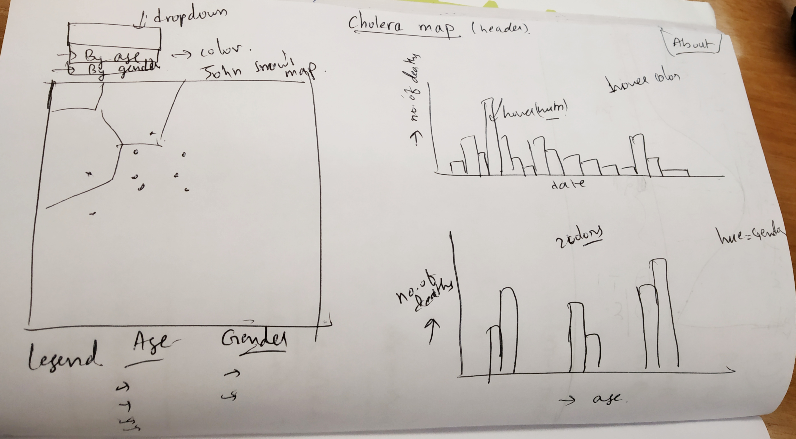
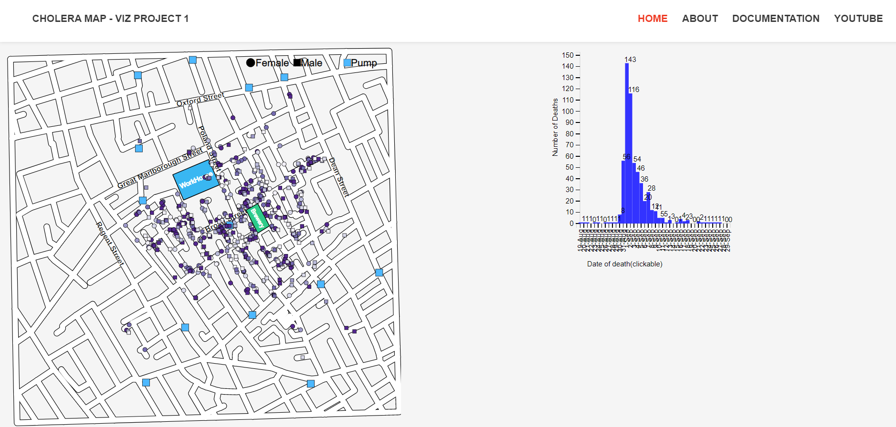
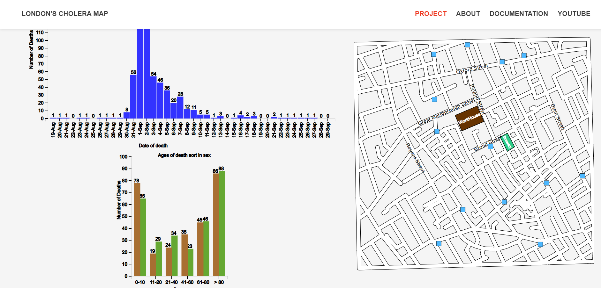

Design Process
Design Process
From the requirements, I designed a basic layout as below.

Now, I did research online on the existing John Snow's Cholera maps. I came across multiple useful links such as Robin's Blog, Post on guardian and ArcGIS. These are informative and gave some ideas on design.
I have created a json data from the streets json and added pumps data, workhouse and brewery from a external source[2].
Some intermediate stages of developement are:


- As per the requirements, I started with a line map of all streets. But, to make it look better and similar to John snow's map I had modified the line with thickness to look like streets
- Map has to show age, gender. So, I choose shape to show gender and color for age in the same map. A simple making of female to circle, male to rectangle makes this possible.
- There is a choice now to use a line chart or a bar chart for selecting the day we want to visualize.
- Though both of them represent the trend of deaths over time. Bar plot will stand out in case we have to make a selection of a day since we have the whole rectangle to hover over.
- So, I plotted a bar graph over time for each day with frequency of people dying. Added the functionality to update Original Map when we hover over a day
- To choose colors without any issues for color blindness I used color brewer with 6 categories for the age group and 2 diverging colors for the gender
- I checked the colors for issues in turn using color orcle tool
- To represent pumps, I used a svg from online available for free from flaticon.com
Reference
I have used bootstrap themes for header and layout alignment.
I have taken code snippets from the d3 documentation[3],stackoverflow[4], and the github[5] where there are many sources of D3 API and functions.
[1]Ke Zhuang.
https://zhuangke16.github.io/H517-Project1/
[2]Shuxian Wu. Interactive Data Visualization for the Web with D3
https://nekogulu.github.io/SX-W/index.html
[3]D3 Documentation.
https://github.com/d3/d3/wiki
[4]StackOverFlow
https://stackoverflow.com
[5]D3 Github
https://github.com/d3/d3-3.x-api-reference
[6]Colororacle
http://colororacle.org
[7]Bl.Ocks
https://bl.ocks.org